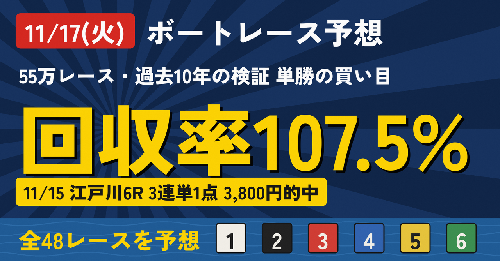

11月17日(火)の全48レースを、55万レースのデータベースで学習した統計モデルで予想しました。無料部分では、予想の作り方と、これまでの成績（外れも含めた全部の数字）を公開しています。
予想する日より前のデータだけで学習したモデルを使い、過去10年（2016/10/27〜2026/10/24）を1年ずつ予想し直した結果です。回収率はすべて、1点100円で計算しています。
3連単は回収率が80%前後で、買い続けると赤字になります。この記事では、10年間で回収率が100%を超えた「単勝の買い目（期待値1以上）」を中心に公開しています。
レース前に公開した予想の答え合わせです（上の10年の検証とは別の集計）。外れも含めて、毎日の記事で全部公開しています。
単勝の的中:
単勝の買い目は、予想した確率と予想オッズから計算した期待値が1以上の艇だけに絞っています。過去10年の検証では、この買い方で回収率100%超えを続けてきました。毎日の記事で、回収率100%超えを目指します。
ただし、回収率は日によって大きく上下し、1日や1週間では100%を下回ることもよくあります。数字は過去の結果で、これからの的中や回収率を約束するものではありません。舟券はご自身の判断で、無理のない金額でお楽しみください（舟券の購入は20歳からです）。
ここから先では、11月17日(火)の徳山・唐津・宮島・平和島の全48レースの予想を公開します。
価格は300円です。11月17日(火)の単勝の買い目は20レースで21点です。
（ここから有料エリア）
対象は、11月16日(月) 15時の時点で番組表が出ている徳山・唐津・宮島・平和島の48レースです。番組表があとから出た場は、この記事には入っていません。
期待値が1を超えた艇です。締切の早い順に並べています。（ ）内は期待値です。本命以外の艇が買いになるのは、人気より実力が上と見ているレースです。
締切直前のオッズが予想より大きく下がっていたら、期待値が1を下回っていることがあります。そのときは見送るのも手です。
本命の1着確率が70%以上のレースです。配当は低めですが、軸として信頼できます。
◎は本命、%は本命の1着確率、最後が予想着順（3連単で一番確率の高い並び）です。本命と予想着順の1着が違うレースは、上位が拮抗している混戦です。
徳山
唐津
宮島
平和島